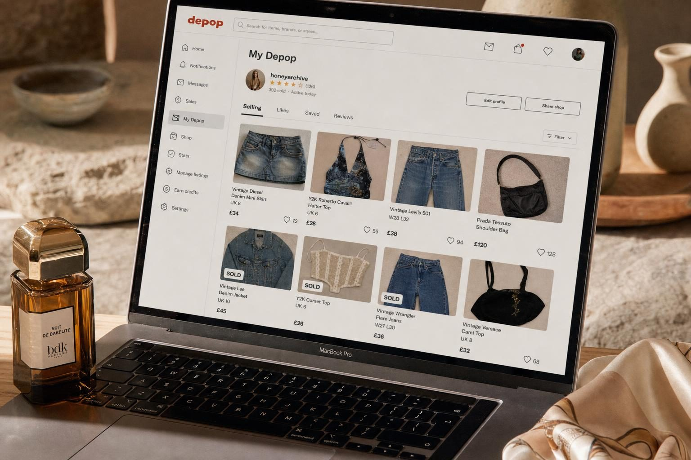
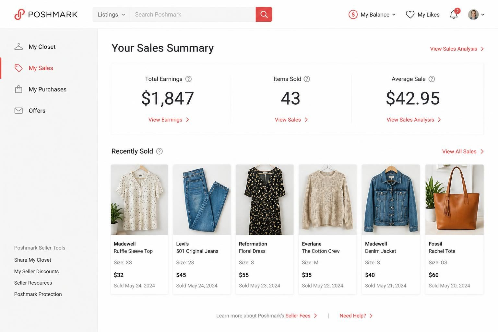
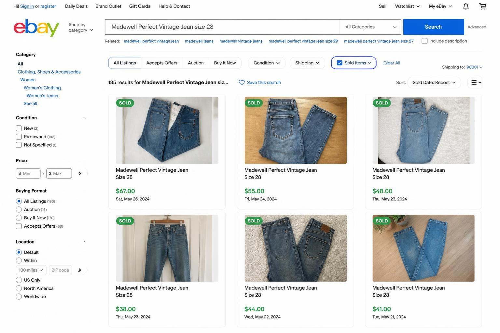
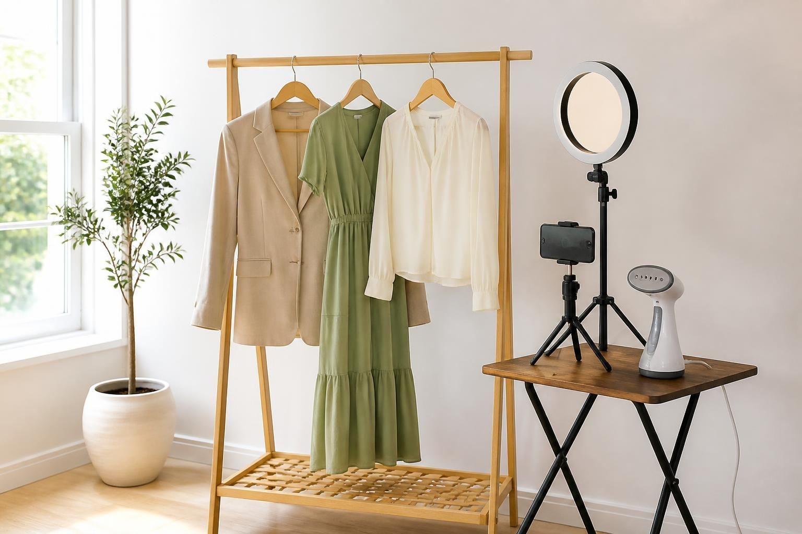
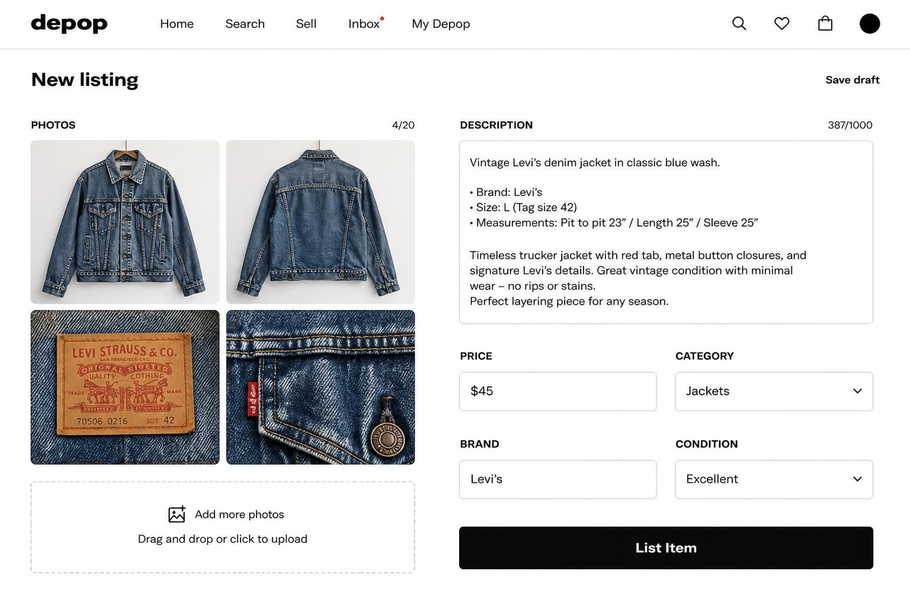

HOW TO SELL CLOTHES ONLINE: THE COMPLETE GUIDE FOR RESELLERS AND BOUTIQUE OWNERS

The secondhand apparel market grew 13% in the past year - nearly four times faster than traditional retail clothing. This is not closet cleanout territory anymore. Women are building real businesses sourcing vintage denim, curating Y2K pieces for Gen Z buyers, and turning boutique overstock into secondary revenue streams.
But here is what nobody tells you upfront: the "easy" platforms take 70-90% of your sale price. The platforms that let you keep 80-90% require you to photograph, list, price, communicate, and ship every single item yourself. There is no shortcut that does not cost you either money or time.
I have watched sellers send bags to consignment services, wait three months, and earn $47 on items worth $400. I have also watched sellers spend 20 hours a week on photography and customer messages for the same return. Neither extreme works.
What actually works? A system that matches your inventory type to the right platforms, prices based on real sold data, and creates listings that convert browsers into buyers. That is exactly what this guide delivers.
THE PLATFORM DECISION THAT DETERMINES YOUR PROFIT MARGINS
Every platform takes a cut. The question is how much - and what you get in return.
Consignment platforms (ThredUp, The RealReal for luxury) handle everything. You send items, they photograph, list, price, and ship. Sounds ideal until you see the math. ThredUp keeps 70-90% of the sale price depending on the item. That $40 blouse you loved? You might see $4-8.
Peer-to-peer platforms flip this equation. You do the work, you keep the money:
- Poshmark: 20% commission (flat $2.95 on sales under $15)
- Depop: 10% plus payment processing
- eBay: roughly 13% total including all fees
- Mercari: 10% plus payment processing
- Facebook Marketplace: free for local pickup sales
The platform you choose should match what you are selling, not what seems easiest.
Poshmark works best for mid-range brands - Anthropologie, Madewell, Lululemon - and buyers aged 25-45 who appreciate the social features. Depop dominates for vintage, Y2K aesthetic, and Gen Z buyers scrolling for statement pieces. eBay attracts collectors, brand loyalists, and plus-size shoppers who know exactly what they want. Mercari moves casual brands quickly at lower price points.
Here is a real example. Sarah had 40 blazers and dresses from Banana Republic and Ann Taylor. She sent everything to ThredUp because photographing seemed like too much work. Three months later: $47. Half her items were rejected. ThredUp took 80% of the rest.
She listed the remaining pieces on Poshmark herself - same items, proper photos, prices based on sold comps. Six weeks later: $380.
Same clothes. Different platform choice. Eight times the profit.

WHY CROSS-LISTING IS NOW STANDARD PRACTICE FOR SERIOUS SELLERS
Single-platform selling leaves money on the table. Every platform attracts different buyers with different tastes and budgets.
The grandmother searching eBay for a specific vintage Coach bag is not the same person scrolling Depop for Y2K cargo pants. The mom looking for affordable kids' clothes on Mercari is not the same buyer who pays premium prices on Poshmark for designer athleisure.
Top resellers list the same item on three to five platforms simultaneously. When it sells on one, they delist from the others within the hour.
How do they manage this without losing their minds?
Cross-listing tools like Vendoo, List Perfectly, and Crosslist automate the process. You create one listing, push it to multiple platforms, and the software handles the formatting differences. When something sells, you mark it sold once and it delists everywhere.
Vendoo runs about $10 per month for basic use. That pays for itself if you sell even one extra item because of the expanded reach.
Denise runs a reselling business from her spare bedroom. She used to list exclusively on Poshmark and averaged 8-10 sales per week. When she started cross-listing to Mercari, eBay, and Facebook Marketplace, her sales nearly tripled. Same inventory. Same photography. Just more eyeballs.
Different platforms attract different demographics - and your item might be perfect for a buyer who never opens the app you originally listed on.
The workflow looks like this: photograph once, write one description, use a tool to push to all platforms, check notifications across apps daily, mark sold immediately when purchased. The extra 15 minutes per day monitoring multiple platforms often translates to hundreds of extra dollars per month.
If you are selling fewer than 20 items total, start with one platform to learn the process. Once you are consistently selling and have a system, expand. Volume justifies the complexity.
PRICING THAT ACTUALLY LEAVES ROOM FOR PROFIT
Most new sellers price from feelings. They think about what they paid originally, what they wish they could get, or what seems "fair." None of that matters.
The only number that matters is what comparable items actually sold for. Not what they are listed at - what they sold for. Listed prices prove nothing. Sold prices prove demand.
Every platform shows this data if you know where to look. On Poshmark, search your item and filter to "Sold Listings." On eBay, check "Sold Items" in the filter options. On Depop, scroll through completed listings from sellers with the same item.
Here is the pricing research process that works:
Search your exact brand + item type + condition. Example: "Madewell Perfect Vintage Jean size 28 medium wash."
Look at the last 10-15 sold listings. Note the price range. Check the listing photos and descriptions - better presentation usually commands higher prices.
Price in the middle of the range for standard sales velocity. Price at the lower end if you want it gone this week. Price at the higher end only if your photos and description are noticeably better than the competition.
Never price based on what you paid or what you hope to get - price based on what buyers actually pay for comparable items.
Now factor in your costs:
- Platform fees (13-20% depending on where you sell)
- Shipping costs if you offer free shipping
- Packaging materials (poly mailers, boxes, tissue paper)
- Your time photographing, listing, packing, shipping
If you sourced an item at a thrift store for $5, platform fees are 20%, shipping costs you $6, and you price at $30 - your actual profit is roughly $13. That is still solid for 15 minutes of work. But if you priced at $20 hoping for a quick sale, your profit drops to $5. Same work, less than half the return.
Jasmine runs a vintage tee business. Her average source cost is $4-8 per item at estate sales. Her average sale price is $45 on Depop. After fees and shipping, she nets $25-30 per shirt. She sells 15-20 items per week. That math works out to a legitimate part-time income from a spare closet and a good eye for 90s graphics.

THE PHOTOGRAPHY SETUP THAT CONVERTS BROWSERS INTO BUYERS
Your photos are your storefront. Blurry images against cluttered backgrounds kill sales regardless of how great the item is.
The good news: a professional-looking setup costs under $100 and takes 30 minutes to arrange.
The minimum setup:
Natural light from a window - not direct sunlight, which creates harsh shadows, but bright indirect light. Morning or late afternoon works best in most rooms.
A clean, neutral background. This can be a white sheet pinned to a wall, a roll of white paper from an art supply store, or even a clear section of blank wall. The background should not compete with the item.
Decide on your format and stick with it for consistency. Options include flat lay (item laid flat, shot from above), hanger shots, on-body photos if you are comfortable, or a dress form/mannequin for a more professional look.
For each item, take at minimum:
- Full front view showing the entire garment
- Full back view
- Close-up of the brand tag or label
- Detail shot of any special features (buttons, embroidery, texture)
- Honest close-up of any flaws (stains, pulls, wear)
That last one matters more than most sellers realize. Buyers who see disclosed flaws trust you more and leave better reviews than buyers who find undisclosed issues after purchase.
Tara runs a Shopify boutique and sells overstock and samples through a Poshmark side operation. She uses a $30 ring light, a $15 garment rack from Amazon, and photographs everything against the same white wall in her office. Her listings look cohesive and professional. Buyers recognize her "look" and trust her items sight unseen.
The consistency matters as much as the quality. When every listing in your closet has the same background, similar lighting, and professional presentation, you look like a real business instead of someone randomly clearing clutter.
One more detail: always photograph items steamed or pressed. Wrinkles make even designer pieces look cheap. A $20 handheld steamer pays for itself after your first sale where good presentation pushed the price up by $10.

MEASUREMENTS: THE DETAIL THAT PREVENTS RETURNS AND BUILDS TRUST
Size 8 from Gap fits differently than size 8 from Zara which fits differently than size 8 from a 1990s vintage piece. Experienced buyers know this. They want measurements, not just the tag size.
Providing measurements upfront does three things: reduces the questions you need to answer, reduces returns from fit issues, and positions you as a knowledgeable seller worth buying from again.
Here is what to measure for each category:
Tops: Bust (pit to pit, doubled), length (shoulder seam to hem)
Pants: Waist (laid flat, doubled), hip (at widest point), rise (crotch seam to top of waistband), inseam (crotch to bottom hem), leg opening
Dresses: Bust, waist, hip, total length (shoulder to hem)
Skirts: Waist, hip, length
Lay items flat and measure with a soft tape measure. Some sellers include photos of the tape measure against the item for extra transparency.
A listing with measurements sells faster than one without - and returns cost you fees, shipping, and time even when you get the item back.
This is especially critical for vintage pieces. A 1970s size 10 runs closer to a modern size 4. A 1990s size medium might fit like today's small. Without measurements, you are leaving buyers to guess - and many will guess wrong or simply not buy.
Maria learned this the hard way. She sold vintage professional wear and kept getting questions: "What are the measurements?" She would measure, respond, and sometimes the buyer had already moved on. Now she includes full measurements in every listing and her question volume dropped by 70%. Her sell-through rate went up because buyers had everything they needed to purchase immediately.
The extra two minutes measuring each item saves hours of back-and-forth messaging and builds the reputation that drives repeat customers.
WRITING LISTINGS THAT CONVERT (NOT JUST DESCRIBE)
A listing is not just a description. It is a sales page. The structure matters.
Your title should include: brand name, item type, size, and one key feature. Front-load the most important information because some platforms truncate long titles in search results.
Good: "Madewell Perfect Vintage Jean Size 28 Medium Wash High Rise"
Bad: "Super cute jeans!! Great condition size 28"
Your description follows this structure:
One sentence that tells buyers why they want this item. Not features - benefits. "The perfect everyday jean that looks polished without trying" works better than "blue denim pants."
Then the specifics: brand, size, color, fabric content if on the tag.
All measurements (see previous section).
Condition notes - be honest. "Excellent pre-owned condition, no flaws" or "Light fading consistent with vintage, small repair at hem shown in photo 5."
"From a smoke-free, pet-free home" if that applies.
Use every keyword tag the platform allows. On Poshmark, you get multiple style tags. On Depop, hashtags in your description improve searchability. Think about what terms a buyer might search: brand name, item type, color, style (boho, minimalist, Y2K), occasion (wedding guest, workwear).
The listing that sells is not the prettiest item - it is the item with the clearest, most complete information presented in a way that builds immediate trust.
If you are building an online clothing business and need a professional website to house your brand - whether you are selling new boutique items or building a curated resale collection - the Switzertemplates Shopify themes give you a full ecommerce setup with mega menus, slide-out cart drawers, and upsell features built in. No coding. No starting from scratch.

THE SHIPPING STRATEGY THAT PROTECTS YOUR MARGINS
Shipping costs eat into profits faster than platform fees if you are not paying attention. A sale feels great until you realize shipping cost more than you budgeted and you made $3.
You have three main options:
Option A: Offer free shipping and build the cost into your price. This converts better because buyers hate paying shipping - psychologically, a $45 item with free shipping feels like a better deal than a $38 item plus $7 shipping, even though the second option costs less. The downside: you need to accurately estimate shipping costs upfront or you lose money on heavier items.
Option B: Use the platform's prepaid shipping labels. Poshmark includes shipping in their fee structure - the buyer pays a flat rate and you use their label. This simplifies everything but limits your pricing flexibility.
Option C: Ship yourself using a service like Pirateship. This gives you access to commercial rates (often 30-40% cheaper than retail USPS rates) but requires you to weigh packages, print labels, and drop off or schedule pickups.
Before you commit to a shipping strategy, weigh a few sample packages and calculate actual costs.
A lightweight blouse in a poly mailer might cost $4-5 to ship. A heavy coat or boots could cost $12-15. If you are offering "free shipping" at a flat rate built into all prices, you will lose money on heavy items and over-charge on light ones.
Most successful sellers use a hybrid approach: free shipping on lightweight items where they can build the cost in comfortably, calculated shipping on heavier items where the cost varies significantly.
Stock up on supplies before you need them. Poly mailers in bulk cost around $0.15-0.25 each. Priority Mail boxes from USPS are free. Tissue paper, thank-you cards, and branded stickers add perceived value for pennies per package.
Your shipping speed also matters for ratings and repeat buyers. Ship within 1-2 days of purchase. Platforms track this and surface faster shippers higher in search results.
FREQUENTLY ASKED QUESTIONS
What is the best site to sell used clothes online?
There is no single "best" - it depends on what you are selling. Poshmark works well for mid-range contemporary brands and has strong social features. Depop dominates for vintage and trendy pieces targeting younger buyers. eBay reaches the largest audience and works for everything from basics to designer. For luxury items over $200 from brands like Chanel or Gucci, The RealReal or Vestiaire Collective handle authentication and attract serious buyers. Start with one platform that matches your inventory, then cross-list once you have a system.
Can you really make money selling clothes online?
Yes - but "money" ranges from pocket change to full-time income depending on your approach. Sending a bag to a consignment service and hoping for the best typically returns $50-100 after months of waiting. Active sellers who photograph well, price from sold data, and cross-list across platforms routinely earn $500-2,000+ monthly from part-time effort. The secondhand market grew 13% last year. The opportunity is real. The question is whether you treat it like a business or a closet cleanout.
What is the 3-3-3 rule for clothing?
This is a minimalist wardrobe concept: 3 tops, 3 bottoms, 3 pairs of shoes, and 3 accessories that all mix and match for a capsule wardrobe. It is useful if you are trying to simplify your own closet, but for sellers, the insight is different - buyers who follow capsule wardrobe principles want versatile, high-quality basics that work with everything. If you are selling, position neutral, well-made pieces as "capsule wardrobe essentials" in your listings.
What platforms do you recommend for selling clothes as a beginner?
Start with Poshmark or Mercari. Both have straightforward listing processes, built-in shipping options that remove guesswork, and large buyer bases. Poshmark's social features (sharing, following, Posh Parties) reward engagement and help new sellers get visibility. Mercari moves items quickly at lower price points. Once you have 20-30 sales and understand the workflow, expand to Depop for trendy/vintage items or eBay for brand-specific pieces with collector appeal.
Where can I sell clothes effectively without spending all my time on it?
If time matters more than maximum profit, use a consignment service like ThredUp - you send items, they handle everything, and you accept lower returns. If you want better returns with minimal ongoing effort, batch your work: dedicate one afternoon to photographing and listing 20-30 items, then spend 10-15 minutes daily responding to questions and sharing listings. Cross-listing tools like Vendoo let you manage multiple platforms from one dashboard, which saves time as you scale.
What is the best way to let go of nice clothes I am not wearing anymore?
If the items are quality brands in good condition, selling is worth the effort - you will recoup money and the items go to someone who will actually wear them. If the items are fast fashion or heavily worn, donation makes more sense than spending hours photographing pieces that might sell for $5. For the middle ground (decent but not premium), try listing on Facebook Marketplace for local pickup - no shipping hassle, quick transactions, and you see if there is demand before investing more effort.
BUILDING A CLOTHING RESALE BUSINESS THAT ACTUALLY LASTS
Learning how to sell clothes online is one thing. Building a sustainable business is another.
The sellers who burn out are the ones who treat every item as a one-off transaction. Photograph it, list it, ship it, forget it. That works for a closet cleanout. It does not work for ongoing income.
The sellers who build real businesses think in systems. They have a photography station that stays set up. They batch their listing work instead of doing one item at a time. They track what they paid, what they sold for, and their actual profit after fees and shipping - not just their revenue number.
The difference between a side hustle and a business is knowing your numbers and building repeatable processes.
If you are sourcing inventory (thrift stores, estate sales, wholesale), track your cost of goods per item. If you are selling your own wardrobe, decide whether you are clearing clutter or building something ongoing - that decision changes how much infrastructure is worth setting up.
The market is real. The secondhand apparel category is growing four times faster than traditional retail. Buyers are actively looking for quality pre-owned pieces, vintage finds, and sustainable alternatives to fast fashion. The opportunity exists.
What separates sellers who make real money from sellers who make pocket change is treating this like the business it is: right platforms, real pricing data, professional presentation, efficient systems.
If your clothing business needs a proper online home - whether you are building a resale brand, launching a boutique, or expanding from marketplace selling to your own store - the Switzertemplates Shopify themes give you a complete ecommerce website ready to customize. Mega menus, cart features, and mobile-first design built in. No building from scratch.
Let me know in the comments below if you want me to cover any branding or marketing topics in more depth, and I'll make sure to create a blog post about it in the future.